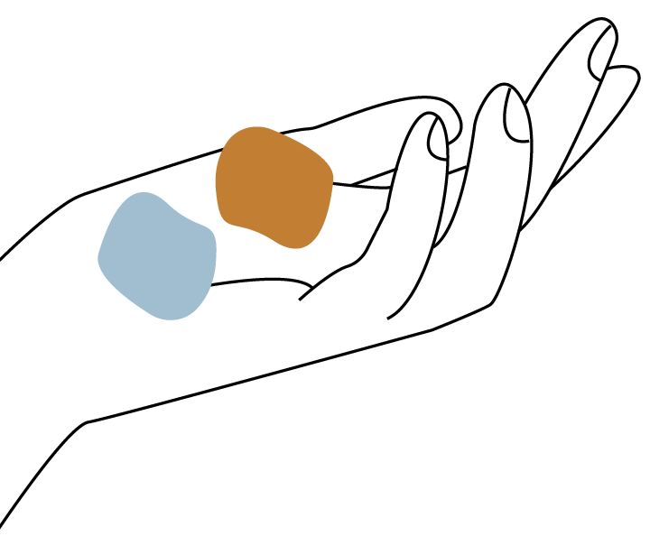
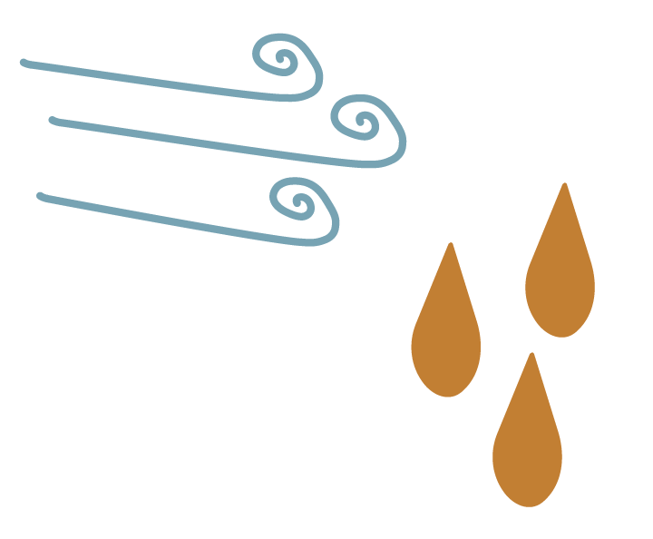
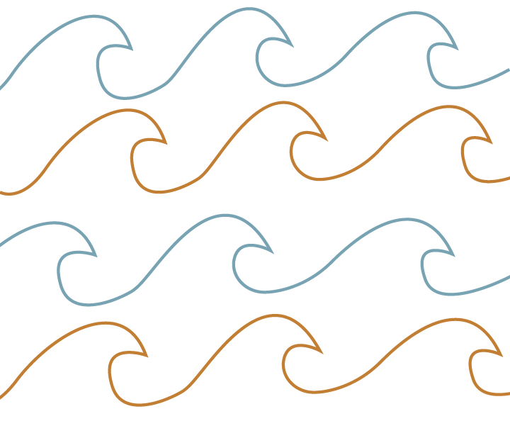
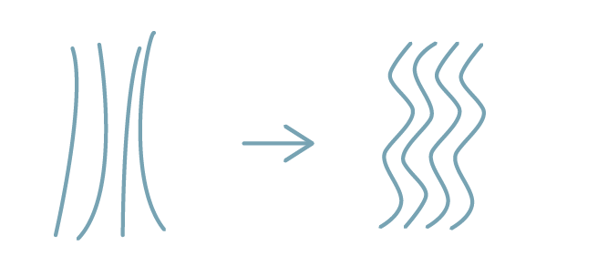
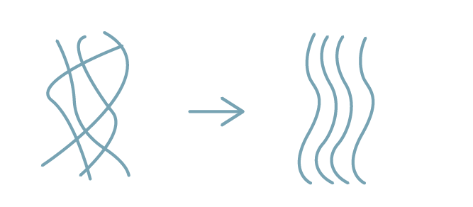
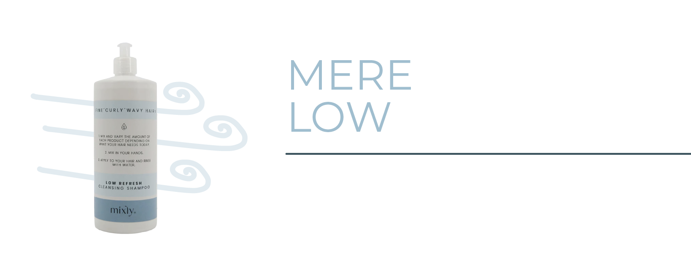
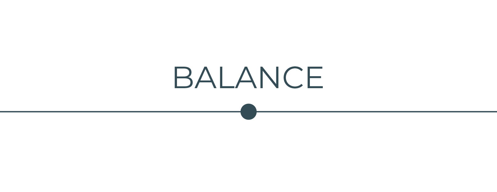
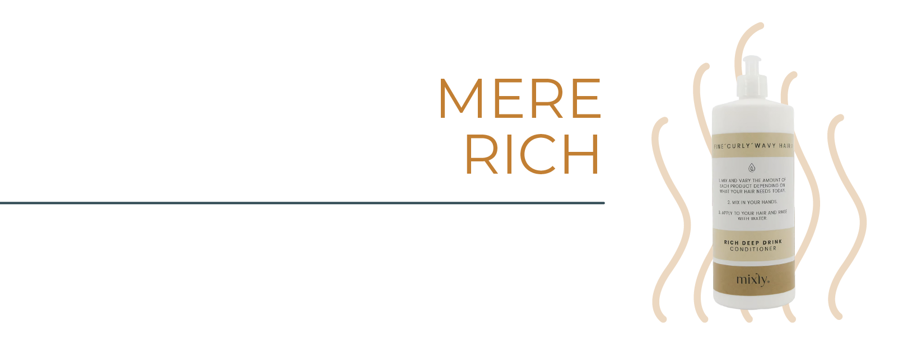

LOW
Lethed og spændstighed
Low hjælper fine krøller og bølger med at føles:
- lettere
- mere luftige
- stærkere
- mindre overplejede
God når dit hår:
- falder sammen
- mangler volume
- føles tungt
Sådan fungerer Mixly
Mixly består af LOW og RICH. Hver for sig kan de noget forskelligt, men det er i kombinationen, de giver mening.
Ved at blande dem sammen kan du tilpasse din rutine til dit hårs behov og skabe den balance mellem fugt, pleje og lethed, som fungerer for dig. Det gør det nemmere at forstå dit hår og lettere at justere, når det ændrer sig.
Udforsk produkterLow hjælper fine krøller og bølger med at føles:
Rich hjælper håret med at føles:
Bland LOW & RICH direkte i håndfladen, start med lige meget af hver.

Fine hårstrå har stadig brug for masser af pleje og støtte.

Tungt hår betyder mere LOW. Tørt hår betyder mere RICH.

Dit hår ændrer sig, og det må din rutine også gerne.
KRØLLEVIDEN
Krøller og bølger har ikke de samme behov hver dag. Når du lærer at genkende, hvordan dit hår føles og reagerer, bliver det lettere at forstå, hvad det har brug for.
I vores guide deler vi konkrete råd til, hvordan du fremhæver dine naturlige krøller og skaber en rutine, der passer til dit hår.
Læs guiden

Føles håret tungt og fladt?
Dit hår har brug for mere LOWFøles håret tørt eller kruset?
Dit hår har brug for mere RICH
Føles håret blødt men ustabilt?
Balancer med LOW + holdMangler dine krøller definition?
Tilføj mere RICH + styling
Føles håret tungt og fladt?
Dit hår har brug for mere LOWFøles håret blødt men ustabilt?
Balancer med LOW + hold


Føles håret tørt eller kruset?
Dit hår har brug for mere RICH
Mangler dine krøller definition?
Tilføj mere RICH + stylingBRUG FOR HJÆLP?
Low & Rich er et værktøj til at forstå dit hår, men alle krøller og bølger er forskellige. Hvis du stadig er i tvivl om produkter, rutiner eller hvordan du skal tolke dit hårs signaler, hjælper jeg dig gerne videre. Sammen finder vi ud af, hvad dit hår har brug for lige nu, så du får en rutine, der passer til dig og din hverdag.
"Jeg hjælper dig med at forstå dit hår, så du kan skabe en rutine, der virker for dig."